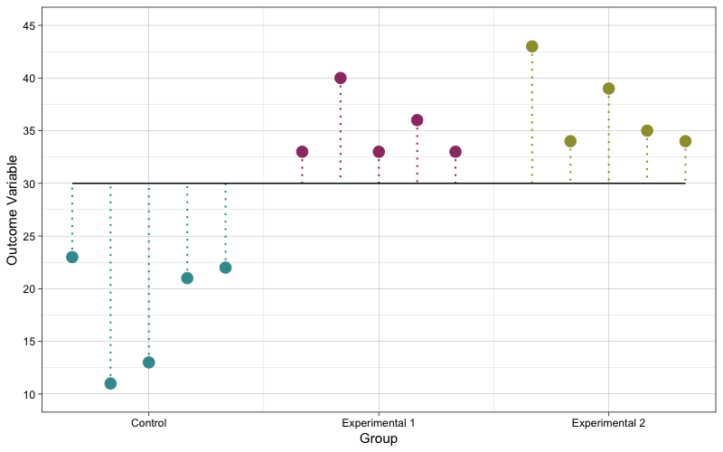
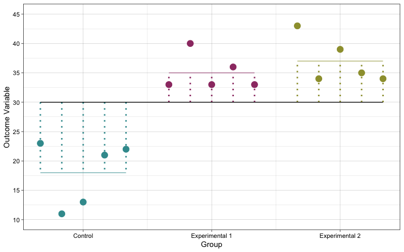
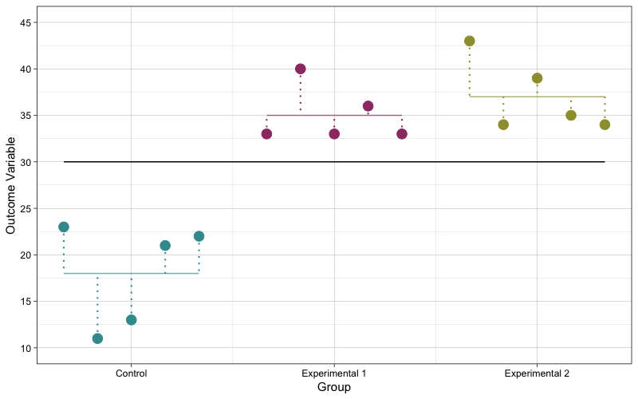

Chapter 4 ANOVA
ANOVA
- Analysis of Variance (ANOVA)
- Concept
- Under the null hypothesis, it assumes that each of the groups is an independent random sample from the population
- ANOVA involves assessing the agreement between two estimators of the population variance
- Concept
- The Statistical Model of ANOVA
- Concept
- The value of observation \(i\) on outcome variable \(y\) is the grand mean plus the effect of the grouping variable it is in plus random error
- Mathematics
- \(y_{i,k} = \mu + \tau_{k} + \epsilon_{i, k}\)
- Where
- \(y_{i,k}\) - The value of the outcome variable \(y\) of observation \(i\) in population \(k\)
- \(\mu\) - The overall/grand mean of the outcome variable \(y\) (the mean of the superpopulation)
- \(\tau_{k}\)
- The deviation of population \(k\) from the overall mean (\(\mu\))
- The nonrandom effect of the group
- Group or sample \(k\) is assumed to be sampled from this population \(k\)
- Since they are normalised, \(\sum_{k=1}^{k}{\tau_k} = 0\)
- \(\mu + \tau_{k}\)
- The mean of population \(k\)
- The expected value of observation \(i\) in population \(k\) (\(y_{i,k}\))
- \(\epsilon_{i,k}\)
- The random error for observation \(i\) in population \(k\)
- The difference between an observed value (\(y_{i,k}\)) and its expected value (\(\mu + \tau_{k}\))
- Assuming that \(y_{ik}\) is a random independent normal variable with \(E(y_{ik}) = 0\) and \(Var(y_{ik}) = 0\), since the error term is the difference between \(y_{i,k}\), a normally distributed random variable with variance of \(\sigma^2\), and its mean, this follows that the errors are also a random independent normal variable with \(E(\epsilon_{ik}) = 0\) (because subtracting each of the errors by its mean will normalize it to 0) and \(Var(\epsilon_{i,k}) = \sigma^2\)
- Where
- \(y_{i,k} = \mu + \tau_{k} + \epsilon_{i, k}\)
- Concept
- Hypothesis Testing for ANOVA
- Conceptual Hypotheses in ANOVA
- Null hypothesis
- \(H_0:\) All populations are the same (are from the same superpopulation)
- \(H_0: \mu_1 = \mu_2 = \cdots = \mu_k\)
- Alternative hypothesis
- \(H_1:\) The populations are different
- \(H_0: \mu_1 ≠ \mu_2 ≠ \cdots ≠ \mu_k 0\)
- Null hypothesis
- Operationalising the null hypothesis to be tested
- General Concept
- The operationalisation of the ANOVA null hypothesis is based on the agreement/disaggreement between 2 estimators of the variance of the superpopulation (\(\sigma^@\)) (or it’s called common variance)
- Estimating the population variance \(\sigma^2\)
- There are 2 estimators of \(\sigma^2\)
- \(MS_W\)
- \(MS_B\)
- The \(MS_W\) estimator
- Concept
- \(SS_W\), and thus also \(MS_W\), are statistics derived from multiple independent random samples, hence, \(SS_W\), and also \(MS_W\), are independent random variables
- And the expectation of \(MS_W\) is \(\sigma^2\)
- Mathematics
- \(E(MS_W) = \sigma^{2}\)
- Implications for \(MS_W\) as an estimator of \(\sigma^2\)
- Hence, the observed \(MS_W\) is an unbiased estimator of \(\sigma^2\)
- Concept
- The \(MS_B\) estimator
- Concept
- \(SS_B\) and \(MS_B\) are statistics derived from multiple independent random samples, hence, \(SS_B\) and \(MS_B\) are independent random variables
- \(MS_B\) is an independent random variable that has a Chi-squared distribution with an expectation of \(\sigma^2 + (\frac{1}{k-1})\sum_{k=1}^{k}{n_k(\tau_k - \bar{\tau})^2}\)
- Mathematics
- \(\displaystyle E\left( MS_B \right) = \sigma^2 + \left(\frac{1}{k-1}\right)\sum_{k=1}^{k}{n_k(\tau_k - \bar{\tau})^2}\)
- Notes
- See proof below
- Notes
- \(\displaystyle E\left( MS_B \right) = \sigma^2 + \left(\frac{1}{k-1}\right)\sum_{k=1}^{k}{n_k(\tau_k - \bar{\tau})^2}\)
- Implication for \(MS_B\) as an estimator of \(\sigma^2\)
- Under the null hypothesis, that is when all \(\tau_ks = 0\), this linear combination \(\left(\frac{1}{k-1}\right)\sum_{k=1}^{k}{n_k(\tau_k - \bar{\tau})^2}\) is \(0\), therefore, \(\displaystyle E\left( MS_B \right) = \sigma^2 + 0\), which means that the observed \(MS_B\) is an unbiased estimator of \(\sigma^2\)
- If the null hypothesis is false, that is when at least one of the \(\tau_ks ≠ 0\), the linear combination of \(\tau_ks\) (\(\left(\frac{1}{k-1}\right)\sum_{k=1}^{k}{n_k(\tau_k - \bar{\tau})^2}\)) will be larger than \(0\), hence, \(MS_B\) is a positively biased estimator of \(\sigma^2\) (it will tend to overestimate \(\sigma^2\))
- Concept
- There are 2 estimators of \(\sigma^2\)
- The test statistic: The F ratio
- Concept
- The conceptual null hypothesis of ANOVA (\(H_0: \mu_1 = \mu_2 = \mu_3 = \cdots = \mu_k\)) is formally operationalised as \(H_0: \sum_{k=1}^{k}{\tau_k^2} = 0\) and this is tested by comparing the \(MS_B\) estimator to the \(MS_W\) estimator as a ratio of \(\frac{MS_B}{\sigma^2}\) to \(\frac{MS_W}{\sigma^2}\)
- This ratio of \(MS_B\) to \(MS_W\) is the test statistic for the null hypothesis of ANOVA and this test statistic is called the \(F\) ratio (or \(F\) statistic)
- Mathematics
- \(F = \frac{MS_B}{MS_W}\)
- Interpretation
- If the null hypothesis is true, that is \(\sum_{k=1}^{k}{\tau_k^2} = 0\), the expected value of \(E(MS_B)\) is just the random variation in the superpopulation (\(E(MS_B) = \sigma^2\)), and \(F = \frac{E(MS_B)}{E(MS_W)} = \frac{\sigma^2}{\sigma^2} = 1\). Using the sample \(MS_B\) and \(MS_W\) as estimators of \(E(MS_B)\) and \(E(MS_B)\) respectively would yield an \(F\) statistic that is close to 1
- If the null hypothesis is false, that is when at least one of the \(\tau_ks > 0\) (\(\sum_{k=1}^{k}{\tau_k^2} > 0\)), in other words, when at least one of the populations is different, the expected value \(E(MS_B)\) consists of both the random variation in the superpopulation and the overall variation induced by the groups (\(E(MS_B) = \sigma^2 + \left(\frac{1}{k-1} \right)\sum_{k=1}^{k}{n_k\tau_k^2}\)), then \(F = \frac{E(MS_B)}{E(MS_W)} = \frac{\sigma^2 + \left(\frac{1}{k-1} \right)\sum_{k=1}^{k}{n_k\tau_k^2}}{\sigma^2}\), where \(\left(\frac{1}{k-1} \right)\sum_{k=1}^{k}{n_k\tau_k^2} > 0\), the \(F\) statistic will be larger than 1
- Concept
- General Concept
- NHST
- The null hypothesis of ANOVA is thus tested by an Upper-Tail \(F\) test
- Conceptual Hypotheses in ANOVA
- The distribution of the F-statistic
- Concept
- Since \(MS_B\) is \(SS_B\) (a chi-squared-distributed independent random variable) divided by its degrees of freedom, and \(MS_W\) is \(SS_W\) (another chi-squared-distributed random variable) divided by its degrees of freedom, the ratio of \(MS_B\) to \(MS_W\) has a Central \(F\) distribution, that is an \(F\) distribution with a degrees of freedom for the numerator of \(v_1 = k-1\) and a degrees of freedom for the denominator of \(v_2 = N - k\) for the denominator
- Mathematics
- \(F_{central} \sim F\left(k - 1, N - k \right)\)
- Concept
- The F test
- Concept
- The process of assessing the probability of an F statistic as extreme as or more extreme than the observed F statistic in the Central F distribution
- Concept
- NHST for ANOVA
- Hypotheses
- Null hypothesis
- Concept
- There are no difference between the means
- The samples are from the same population
- Mathematics
- \(H_0: \mu_1 = \mu_2 = \mu_3 = \cdots = \mu_k\) or \((\tau_k - \bar{\tau})^2 = 0\)
- Concept
- Alternative hypothesis
- Concept
- At least one of the samples is likely from another population
- Mathematics
- \(H_1: \mu_1 ≠ \mu_2 ≠ \mu_3 ≠ \cdots ≠ \mu_k\) or \((\tau_k - \bar{\tau})^2 > 0\)
- Concept
- Null hypothesis
- NHST
- The null hypothesis is tested by an upper-tailed \(F\) test
- The null hypothesis is tested by assessing the probability of getting an F-statistic equal to or larger than the observed \(F\) statistic in the Central \(F\) distribution
- The F test for 2 samples is equivalent to the t test
- Hypotheses
\(H_0: \sum_{k=1}^{k}{\tau_k^2} = 0\) (operationally) - Hypothesis Testing for ANOVA
- Total Sum of Squares
- Concept
- The Sum of Squares that represents the total amount of variation in the outcome variable
- It is the sum of all the squared deviations between each observed value and the grand mean
- Visualisation
- 
- Mathematics
- \(\displaystyle \begin{alignat*}{10} {SS_{T}} = {\sum_{k=1}^{k}{\sum_{i=1}^{n_k}{(y_{i,k} - \bar{y})^2}}} \end{alignat*}\)
- Where
- \(k\) represents group \(k\)
- \(i\) represents observation \(i\)
- \(y_{i,k}\) - Observation \(i\) in group \(k\)
- \(\bar{y}\) - The grand mean
- Notes
- Alternatively, it can be expressed simply as:
- \(\displaystyle \sum_{n=1}^{n}{(y_i - \bar{y})^2}\)
- Alternatively, it can be expressed simply as:
- Where
- \(\displaystyle \begin{alignat*}{10} {SS_{T}} = {\sum_{k=1}^{k}{\sum_{i=1}^{n_k}{(y_{i,k} - \bar{y})^2}}} \end{alignat*}\)
- Total degrees of freedom
- \(\begin{aligned}df_T &= df_M + df_E \\ df_T &= N-1 \end{aligned}\)
- Mean Total Sum of Squares (Total Variance)
- Concept
- Total Variance in the outcome variable
- The mean amount of variation in the outcome variable
- The average amount by squared deviation between each observation and the grand mean
- It is the standardised version of the Total Sum of Squares
- Because the Total Sum of Squares is the sum of all the squared deviations, it depends on the degrees of freedom. Finding the mean, specifically, dividing the Total Sum of Squares by the degrees of freedom will standardise the quantity
- Mathematics
- \(MS_T = \frac{SS_T}{df_T}\)
- Concept
- Concept
- ANOVA and variance partitioning
- Concept
- ANOVA partitions the Total Sum of Squares of the outcome variable into 2 components:
- The Model Sum of Squares
- The Error Sum of Squares
- ANOVA partitions the Total Sum of Squares of the outcome variable into 2 components:
- Mathematics
- \(\displaystyle \begin{alignat*}{10} {SS_{T}} &= {SS_{M}} + {SS_{E}} \\ {\sum_{k=1}^{k}{\sum_{i=1}^{n_k}{(y_{i,k} - \bar{y})^2}}} &= {\sum_{k = 1}^{k}{n_k(\bar{y}_k - \bar{y})^2} + {\sum_{k=1}^{k}{\sum_{i=1}^{n_k}{(y_{i,k} - \bar{y}_k})^2} }} \end{alignat*}\)
- Between/Model Sum of Squares
- Concept
- The amount of variation between groups/samples/populations
- In an experimental design, it represents the amount of variation in the outcome variable that is induced or explained by the model in the model (systematic variation)
- It is the sum of all the squared deviations between the predicted value of each observation (which is the mean of the group to which the observation belongs) and the grand mean
- Visualisation
- 
- Mathematics
- \({SS_{B}} = {\sum_{k = 1}^{k}{n_k(\bar{y}_k - \bar{y})^2}}\)
- Where
- \(n_k\) - Group size
- \(\bar{y}_k\) - The mean of group $k$0
- Where
- \({SS_{B}} = {\sum_{k = 1}^{k}{n_k(\bar{y}_k - \bar{y})^2}}\)
- Distribution of \(SS_B\)
- \(\frac{SS_B}{\sigma^2} \sim \chi()\)
- Model degrees of freedom
- \(df_B = K - 1\)
- Distribution of \(SS_B\)
- \(\displaystyle \frac{SS_B}{\sigma^2} \sim \chi \left(K - 1 \right)\)
- Mean Model Sum of Squares
- Concept
- Between-group/sample variance - The variance between groups
- In a 2-group/sample design, it is the variance between 2 groups
- Variance in the outcome variable explained by the model
- The mean amount of variation in the outcome variable explained by the model
- The average amount of squared deviation between the predicted value of each observation and the grand mean
- Between-group/sample variance - The variance between groups
- Mathematics
- \(MS_M = \frac{SS_M}{df_M}\)
- Concept
- Concept
- Error Sum of Squares
- Concept
- It represents the amount of variation in the outcome variable that is not explained by the model or attributable to the predictors in the model and is assumed to be due to random error
- It is the sum of all the squared deviations between each observed value and the mean of the group to which it belongs
- Visualisation
- 
- Mathematics
- \({SS_{E}} = {\sum_{k=1}^{k}{\sum_{i=1}^{n_k}{(y_{i,k} - \bar{y}_k})^2}}\)
- Notes
- Alternatively, it is the sum of the variance of each group times the degrees of freedom of that group (so you get the error sum of squares of that group)
- \(\sum_{k=1}^{k}{(n_k-1)s_{k}^{2}}\)
- Alternatively, it is the sum of the variance of each group times the degrees of freedom of that group (so you get the error sum of squares of that group)
- Notes
- \({SS_{E}} = {\sum_{k=1}^{k}{\sum_{i=1}^{n_k}{(y_{i,k} - \bar{y}_k})^2}}\)
- Degrees of freedom
- \(df_e = N-k\)
- Distribution of \(\frac{SS_W}{\sigma^2}\)
- \(\displaystyle \frac{SS_W}{\sigma^2} \sim \chi \left(N - K \right)\)
- Mean Error Sum of Squares (Variance Unexplained/Error Variance)
- Concept
- Variance in the outcome variable not explained by the model and is assumed to be due to random error
- The mean amount of variation in the outcome variable not explained by the model
- The average amount of squared deviation between the predicted value of each observation and its predicted value
- Mathematics
- \(MS_E = \frac{SS_E}{df_e}\)
- Alternatively, it is just the error variance
- \(\displaystyle MS_E = s^2 = \frac{1}{n-k}\sum_{k=1}^{k}{(n_k-1)s_{k}^{2}}\)
- Alternatively, it is just the error variance
- \(MS_E = \frac{SS_E}{df_e}\)
- Concept
- Concept
- The Model as a whole
- Mathematics
- \(\displaystyle \begin{alignat*}{10} {SS_{T}} &= {SS_{M}} + {SS_{E}} \\ {\sum_{k=1}^{k}{\sum_{i=1}^{n_k}{(y_{i,k} - \bar{y})^2}}} &= {\sum_{k = 1}^{k}{n_k(\bar{y}_k - \bar{y})^2} + {\sum_{k=1}^{k}{\sum_{i=1}^{n_k}{(y_{i,k} - \bar{y}_k})^2} }} \end{alignat*}\)
- Mathematics
- Concept
- Proof of \(E(MS_B) = \sigma^2\)
- \(\displaystyle MS_B = \left( \frac{1}{k - 1}\right) \sum_{k=1}^{k}{n_k \left(\bar{y}_{k} - \bar{y} \right)^2}\)
- Since:
- \(\begin{aligned} \displaystyle \bar{y}_{k} &= \frac{1}{n_k}\sum_{i = 1}^{n_k}{y_{ik}} \\ \displaystyle &= \frac{1}{n_k}\sum_{i = 1}^{n_k}{\left( \mu + \tau_k + \epsilon_{ik} \right)} \\ \displaystyle &= \mu + \tau_k + \frac{1}{n_k}\sum_{i = 1}^{n_k}{\epsilon_{ik}} \\ \displaystyle &= \mu + \tau_k + \bar{\epsilon}_k \end{aligned}\)
- \(\begin{aligned} \displaystyle \bar{y} &= \frac{1}{N}\sum_{k = 1}^{k}{\sum_{i = 1}^{n_k}{y_{ik}}} \\ \displaystyle &= \frac{1}{N}\sum_{k = 1}^{k}{\sum_{i = 1}^{n_k}{\left( \mu + \tau_k + \epsilon_{ik} \right)}} \\ \displaystyle &= \mu + \frac{1}{N}\sum_{k = 1}^{k}{n_k \tau_k} + \frac{1}{N}\sum_{k = 1}^{k}{\sum_{i = 1}^{n_k}{\epsilon_{ik}}} \\ \displaystyle &= \mu + \bar{\tau} + \bar{\epsilon} \end{aligned}\)
- Since:
- \(\displaystyle MS_B = \left( \frac{1}{k - 1}\right) \sum_{k=1}^{k}{n_k \left(\bar{y}_{k} - \bar{y} \right)^2} \\ \displaystyle MS_B = \left( \frac{1}{k - 1}\right) \sum_{k=1}^{k}{n_k \left[(\mu + \tau_k + \bar{\epsilon}_k) - (\mu + \bar{\tau} + \bar{\epsilon}) \right]^2} \\ \displaystyle MS_B = \left( \frac{1}{k - 1}\right) \sum_{k=1}^{k}{n_k \left[(\tau_k - \bar{\tau}) + (\bar{\epsilon}_k - \bar{\epsilon}) \right]^2} \\ \displaystyle MS_B = \left( \frac{1}{k - 1}\right) \sum_{k=1}^{k}{n_k \left[(\tau_k - \bar{\tau})^2 + 2(\tau_k - \bar{\tau})(\bar{\epsilon}_k - \bar{\epsilon}) + (\bar{\epsilon}_k - \bar{\epsilon})^2 \right]} \\ \displaystyle MS_B = \left( \frac{1}{k - 1}\right) \sum_{k=1}^{k}{ \left[n_k(\tau_k - \bar{\tau})^2 + 2n_k(\tau_k - \bar{\tau})(\bar{\epsilon}_k - \bar{\epsilon}) + n_k(\bar{\epsilon}_k - \bar{\epsilon})^2 \right]} \\ \displaystyle MS_B = \left( \frac{1}{k - 1}\right) \sum_{k=1}^{k}{n_k(\tau_k - \bar{\tau})^2} + \left( \frac{1}{k - 1}\right)\sum_{k=1}^{k}{2n_k(\tau_k - \bar{\tau})(\bar{\epsilon}_k} - \bar{\epsilon}) + \left( \frac{1}{k - 1}\right)\sum_{k=1}^{k}{n_k(\bar{\epsilon}_k - \bar{\epsilon})^2} \\ \displaystyle E(MS_B) = \left( \frac{1}{k - 1}\right) E\left[\sum_{k=1}^{k}{n_k(\tau_k - \bar{\tau})^2}\right] + \left( \frac{1}{k - 1}\right) E\left[\sum_{k=1}^{k}{2n_k(\tau_k - \bar{\tau})(\bar{\epsilon}_k} - \bar{\epsilon})\right] + \left( \frac{1}{k - 1}\right) E\left[ \sum_{k=1}^{k}{n_k(\bar{\epsilon}_k - \bar{\epsilon})^2}\right]\)
- Since:
- \(\tau_k\) and thus \(\bar{\tau}\) are constants and \(E(\epsilon_{ik}) = E(\bar\epsilon_{i}) = E(\bar\epsilon) = 0\)
- Since:
- \(\displaystyle E(MS_B) = \left( \frac{1}{k - 1}\right) \sum_{k=1}^{k}{n_k(\tau_k - \bar{\tau})^2} + \left( \frac{1}{k - 1}\right) E\left[ \sum_{k=1}^{k}{n_k(\bar{\epsilon}_k - \bar{\epsilon})^2}\right] \\ \displaystyle E(MS_B) = \left( \frac{1}{k - 1}\right) \sum_{k=1}^{k}{n_k(\tau_k - \bar{\tau})^2} + \left( \frac{1}{k - 1}\right) E\left[ \sum_{k=1}^{k}{n_k(\bar{\epsilon}_{k}^{2} - 2\bar{\epsilon}_{k}\bar{\epsilon} + \bar{\epsilon}^{2})}\right] \\ \displaystyle E(MS_B) = \left( \frac{1}{k - 1}\right) \sum_{k=1}^{k}{n_k(\tau_k - \bar{\tau})^2} + \left( \frac{1}{k - 1}\right) E\left[ \sum_{k=1}^{k}{n_k\bar{\epsilon}_{k}^{2} - 2n_k\bar{\epsilon}_{k}\bar{\epsilon} + n_k\bar{\epsilon}^{2}}\right] \\ \displaystyle E(MS_B) = \left( \frac{1}{k - 1}\right) \sum_{k=1}^{k}{n_k(\tau_k - \bar{\tau})^2} + \left( \frac{1}{k - 1}\right) E\left[ \sum_{k=1}^{k}{(n_k\bar{\epsilon}_{k}^{2})} - 2N\bar{\epsilon}^{2} + N\bar{\epsilon}^{2}\right] \\ \displaystyle E(MS_B) = \left( \frac{1}{k - 1}\right) \sum_{k=1}^{k}{n_k(\tau_k - \bar{\tau})^2} + \left( \frac{1}{k - 1}\right) E\left[ \sum_{k=1}^{k}{(n_k\bar{\epsilon}_{k}^{2})} - N\bar{\epsilon}^{2}\right] \\ \displaystyle E(MS_B) = \left( \frac{1}{k - 1}\right) \sum_{k=1}^{k}{n_k(\tau_k - \bar{\tau})^2} + \left( \frac{1}{k - 1}\right) \left[\sum_{k=1}^{k}{n_k E(\bar{\epsilon}_{k}^{2})} - NE(\bar{\epsilon}^{2})\right] \\ \displaystyle E(MS_B) = \left( \frac{1}{k - 1}\right) \sum_{k=1}^{k}{n_k(\tau_k - \bar{\tau})^2} + \left( \frac{1}{k - 1}\right) \left[\sum_{k=1}^{k}{n_k \frac{\sigma^2}{n_k}} - N\frac{\sigma^2}{N}\right] \\ \displaystyle E(MS_B) = \left( \frac{1}{k - 1}\right) \sum_{k=1}^{k}{n_k(\tau_k - \bar{\tau})^2} + \left( \frac{1}{k - 1}\right) \left[\sum_{k=1}^{k}{\sigma^2} - \sigma^2\right] \\ \displaystyle E(MS_B) = \left( \frac{1}{k - 1}\right) \sum_{k=1}^{k}{n_k(\tau_k - \bar{\tau})^2} + \left( \frac{1}{k - 1}\right) (k{\sigma^2} - \sigma^2) \\ \displaystyle E(MS_B) = \left( \frac{1}{k - 1}\right) \sum_{k=1}^{k}{n_k(\tau_k - \bar{\tau})^2} + \left( \frac{1}{k - 1}\right) (k-1)\sigma^2 \\ \displaystyle E(MS_B) = \left( \frac{1}{k - 1}\right) \sum_{k=1}^{k}{n_k(\tau_k - \bar{\tau})^2} + \sigma^2 \\ \displaystyle E(MS_B) = \sigma^2 + \left( \frac{1}{k - 1}\right) \sum_{k=1}^{k}{n_k(\tau_k - \bar{\tau})^2}\)
- Since:
- \(\bar{\tau} = 0\)
- Since:
- \(\displaystyle E(MS_B) = \sigma^2 + \left( \frac{1}{k - 1}\right) \sum_{k=1}^{k}{n_k\tau_k^2}\)
- \(\displaystyle MS_B = \left( \frac{1}{k - 1}\right) \sum_{k=1}^{k}{n_k \left(\bar{y}_{k} - \bar{y} \right)^2}\)
Other stuff
- The T and F
- The squared independent random variable with a t-distribution with \(v\) degree of freedom has an F distribution with degrees of freedom 1 of 1 and degree of freedom 2 of \(v\)
- My interpretation (Read with caution)
- t and F are ratios of the variation due to the model to the natural random variation in the distribution
- t is the ratio of the variation due to the model in terms of difference in their expected values to the natural random variation in the distribution (the distribution being the sampling distribution; so they look at the expected values)
- F is the ratio of the variation due to the model in terms of individual scores to the natural random variation in the distribution (the distribution being the population distribution; so they look at individual scores rather than expected values)
- \(t^2 = F\)
- Variance of a linear combination of random variables
- Mathematics
- \(\begin{aligned} \displaystyle y &= \sum_{i = 1}^{n}{a_ix_i} = a_1x_1 + a_2x_2 + a_3x_3 + \cdots + a_nx_n \\ \displaystyle \text{Var}(y) &= \sum_{i=1}^{n}{a_i^2\text{Var}(x_i)} + 2\sum_{}^{}{\sum_{1≤i<j≤n}^{}{\text{Cov}(a_i, a_j)}} \\ \displaystyle \text{Var}(y) &= \text{Var}(x_i)\sum_{i=1}^{n}{a_i^2} + 2\sum_{}^{}{\sum_{1≤i<j≤n}^{}{\text{Cov}(a_i, a_j)}} \end{aligned}\)
- Where
- The double sum is over all pairs \((i,j)\) with \(i < j\)
- Ref
- Wackerly, Mendenhall and Scheaffer
- Where
- \(\begin{aligned} \displaystyle y &= \sum_{i = 1}^{n}{a_ix_i} = a_1x_1 + a_2x_2 + a_3x_3 + \cdots + a_nx_n \\ \displaystyle \text{Var}(y) &= \sum_{i=1}^{n}{a_i^2\text{Var}(x_i)} + 2\sum_{}^{}{\sum_{1≤i<j≤n}^{}{\text{Cov}(a_i, a_j)}} \\ \displaystyle \text{Var}(y) &= \text{Var}(x_i)\sum_{i=1}^{n}{a_i^2} + 2\sum_{}^{}{\sum_{1≤i<j≤n}^{}{\text{Cov}(a_i, a_j)}} \end{aligned}\)
- Applications of this fact
- Sampling variance/standard error
- Concept
- The sampling variance or standard error of a linear function/combination of random variables can be found using this fact
- Most statistics are a linear combination of random variables (e.g. sample mean, sample beta, etc.)
- Using the fact to derive the sampling variance of the mean
- Let \(\bar{y_i}\) be a sample mean
- The sample mean is a linear function
- \(\bar{y_i} = \frac{x_1 + x_2 + x_3 + \cdots + x_n}{n} \\ \bar{y_i} = \frac{1}{n}x_1 + \frac{1}{n}x_2 + \frac{1}{n}x_3 + \cdots + \frac{1}{n}x_n \\ \bar{y}_i = \sum_{i = 1}^{n}{\frac{1}{n}x_i} \\ \displaystyle \text{Var}(\bar{y_i}) = \text{Var}(x_i)\sum_{i = 1}^{n}{\left(\frac{1}{n}\right)^2} + 2\sum_{}^{}{\sum_{1≤i<j≤n}^{}{\text{Cov}(x_i, x_j)}}\)
- Assuming that \(x_i\) are independent, which implies that \(\sum_{}^{}{\sum_{1≤i<j≤n}^{}{\text{Cov}(x_i, x_j)}} = 0\)
- \(\displaystyle \text{Var}(\bar{y_i}) = \text{Var}(x_i)\sum_{i = 1}^{n}{\left(\frac{1}{n}\right)^2} \\ \displaystyle \text{Var}(\bar{y_i}) = \text{Var}(x_i)n{\left(\frac{1}{n}\right)^2} \\ \displaystyle \text{Var}(\bar{y_i}) = \text{Var}(x_i)\frac{1}{n} \\ \displaystyle \text{Var}(\bar{y_i}) = \frac{\sigma^2}{n} \\ \displaystyle \text{sd}(\bar{y_i}) = \sqrt{\frac{\sigma^2}{n}} = \frac{\sigma}{\sqrt{n}}\)
- Concept
- Sampling variance/standard error
- Mathematics
The F statistic
- The F statistic
- Concept
- The \(F\) statistic is the ratio of a independent random variable with a Chi-squared distribution divided by its degrees of freedom to another independent random variable with a Chi-squared distribution divided by its degrees of freedom
- Mathematics
- \(F = \frac{\frac{S_1}{df_1}}{\frac{S_2}{df_2}}\)
- Where
- \(S_1\) is an independent random variable with a Chi-squared distribution with degrees of freedom of \(df_1\)
- \(S_2\) is another independent random variable with a Chi-squared distribution with degrees of freedom of \(df_2\)
- Where
- \(F = \frac{\frac{S_1}{df_1}}{\frac{S_2}{df_2}}\)
- Concept
- The F-distribution: The distribution of the F statistic
- Concept
- The \(F\) statistic has an \(F\) distribution
- Mathematics
- I am not including the PDF maths here
- Concept
- Sum of Squared Deviations
- Concept
- Aka Sum of Squares
- A measure of variation
- The Sum of Squared Deviation is the sum of all the squared deviations where a deviation is the difference between an observed value and its expected value
- It is the standardized version of the variance
- Mathematics
- \(\displaystyle SS = \sum_{i=1}^{n}{\left( y_i - E(y)\right)^2}\)
- Where
- \(y\) is a variable
- Where
- \(\displaystyle SS = \sum_{i=1}^{n}{\left( y_i - E(y)\right)^2}\)
- Concept
ANOVA as a Linear Model
Introduction
- ANOVA can be implemented in a Linear Model
2-sample ANOVA as a Linear Model
- Mathematics
- \(y_{ik} = \beta_{0} + \beta_{k}x_k + \epsilon_{ik}\)
- Where
- \(y_{ik}\)
- Observation \(i\) in group/sample \(k\)
- \(\beta_{0}\)
- The reference group/sample - The group/sample against which each of the other samples are compared
- If there is a control group, it would make the most sense if the control group is used as the reference group
- \(\beta_{k}\)
- The difference between the mean of sample/group \(k\) and \(\beta_0\)
- \(\beta_k = \mu_k - \mu_0\)
- Represents the effect of level \(k\) of the categorical predictor variable relative to the reference group
- \(x_k\)
- A dummy or indicator variable for \(\beta_k\)
- \(x_k = \begin{cases} 1 ~~~ \text{if the observation is from the group} ~ k \\ 0 ~~~ \text{if the observation is not from the group}~k \end{cases}\)
- \(\beta_{0} + \beta_{k}x_k\)
- The expected value of group \(k\)
- This is equivalent to \(\mu_k\)
- \(\epsilon_{ik}\)
- The random error of observation \(i\) in group \(k\)
- \(\epsilon_{ik}\) is a random independent normal variable with \(E(\epsilon_{ik}) = 0\) and \(Var(\epsilon_{ik}) = \sigma^2\)
- \(y_{ik}\)
- Where
- \(y_{ik} = \beta_{0} + \beta_{k}x_k + \epsilon_{ik}\)
- Mathematics
NHST
- Concept
- To test the null hypothesis that the \(\beta_1 = \mu_1 - \mu_0 = 0\)
- For this 2-sample test, you can use a t-statistic or an F statistic
- Hypotheses
- Null hypothesis
- Beta 1 is 0
- \(H_0: \beta_1 = 0\)
- Null hypothesis
- t test
- The t statistic
- \(t = \frac{\hat\mu_1 - \hat\mu_0}{\text{sd}(\hat\mu_1 - \hat\mu_0)} = \frac{\hat\beta_1}{\text{sd}(\hat\beta)}\)
- Where
- \(\text{sd}(\hat\beta)\) is the standard error of the \(\hat\beta_1\)
- Where
- \(t = \frac{\hat\mu_1 - \hat\mu_0}{\text{sd}(\hat\mu_1 - \hat\mu_0)} = \frac{\hat\beta_1}{\text{sd}(\hat\beta)}\)
- The t statistic
- F test
- The F-statistic
- \(F = \frac{MS_B}{MS_E}\)
- The F-statistic
- Concept
3-sample ANOVA as a Linear Model with Dummy Coding
- Mathematics
- \(y_{ik} = \beta_{0} + \beta_{1}x_1 + \beta_{2}x_2 + \epsilon_{ik}\)
- Where
- \(\beta_{0}\)
- The mean of the sample at the reference/baseline group/level
- It represents the predicted value in the outcome variable when all other levels of the Factor are 0 (controlling for the effect of all other levels of the Factor)
- \(\beta_{0} = \mu_{reference ~ level}\)
- For example, if level 1 is chosen as the reference level, then \(\beta_{0} = \mu_{1}\)
- \(\beta_{1}\)
- Dummy variable 1
- Represents the effect of one level of the Factor (by default, R chooses the second level of the Factor)
- The difference between the mean of the sample at one level of the Factor and the intercept
- For example, if this level is level 2 of the Factor, then \(\beta_{1} = \mu_{2} - \mu_{1}\)
- \(x_{1}\)
- Weight or indicator function for dummy variable 1
- Dummy coding
- \(x_{1} = \begin{cases} 1 ~~~ \text{if the observation is from sample 1} \\ 0 ~~~ \text{if the observation is not from sample 1} \end{cases}\)
- \(\beta_{2}\)
- \(\beta_{2} = \mu_{2} - \mu_{0}\)
- Dummy variable 2
- Represents the effect of the other level of the Factor compared to the intercept (by default, R chooses the third level of the Factor)
- The difference between the mean of the sample at the other level of the Factor and the intercept
- \(x_{2}\)
- Weight or indicator function for dummy variable 2
- Dummy contrast coding
- \(x_{2} = \begin{cases} 1 ~~~ \text{if the observation is from sample 1} \\ 0 ~~~ \text{if the observation is not from sample 1} \end{cases}\)
- \(\beta_{0}\)
- Where
- \(y_{ik} = \beta_{0} + \beta_{1}x_1 + \beta_{2}x_2 + \epsilon_{ik}\)
- Mathematics
3-sample ANOVA as a Linear Model with Helmert Contrast Coding
- Mathematics
- \(y_{ik} = \beta_{0} + \beta_{1}x_1 + \beta_{2}x_2 + \epsilon_{ik}\)
- Where
- \(\beta_{0}\)
- \(\beta_{0} = \mu_{grand}\)
- The grand mean
- The mean of group means
- With a 3-sample ANOVA with Helmert coding, it is \(\beta_{0} = \mu_{grand} = \frac{\mu_{1} + \mu_{2} + \mu_{3}}{3}\)
- \(\beta_{1}\)
- \(\displaystyle \beta_{1} = \mu_{1} - \left(\frac{\mu_{2} + \mu_{3}}{2} \right)\)
- Helmert Contrast variable 1
- The difference between the mean of the sample at level 1 of the factor and the mean of the sample at level 2 and 3 lumped together
- Represents the effect of level 2 and 3 compared to level 1
- \(x_{1}\)
- Weight or indicator function for Helmert Contrast variable 1
- \(x_{1} = \begin{cases} \frac{2}{3} ~~~ \text{if the observation is from the sample at level 1} \\ -\frac{1}{3} ~~~ \text{if the observation is from the sample at level 2} \\ -\frac{1}{3} ~~~ \text{if the observation is from the sample at level 3}\end{cases}\)
- \(\beta_{2}\)
- \(\beta_{2} = \mu_{2} - \mu_{3}\)
- Helmert Contrast variable 2
- Dummy variable for category 2
- The difference between the mean of the sample at level 2 of the factor and the mean of the sample at level 3 of the factor
- Represents the effect of level 2 of the factor compared to level 3 of the factor
- \(x_{2}\)
- Weight or indicator function for Helmert Contrast variable 2
- \(x_{2} = \begin{cases} 0 ~~~ \text{if the observation is from the sample at level 1} \\ \frac{1}{2} ~~~ \text{if the observation is from the sample at level 2} \\ -\frac{1}{2} ~~~ \text{if the observation is from the sample at level 3}\end{cases}\)
- \(\beta_{0}\)
- Where
- \(y_{ik} = \beta_{0} + \beta_{1}x_1 + \beta_{2}x_2 + \epsilon_{ik}\)
- Mathematics
Helmert Contrast
Bootstrap
- For robust confidence intervals and p-values
Non-parametric F
- Kruskal-Wallis test
Robust F
- Welch’s F
Mann-Whitney test
- Concept
- Aka Wilcoxon rank sum test
- Non-parametric test for difference between 2 independent samples
- Observations from both samples are grouped together and ranked in ascending order
- The test statistic the rank sum (sum of the ranks) of one of the samples (this statistic is called R)
- Statistical significance is assessed by finding the probability of the observed statistic in the probability distribution of the R test statistic under the null hypothesis
- Procedure
- Group all observations from both samples together and rank the observations in ascending order
- Calculate the sample R statistic (the R statistic is the sum of the ranks of those observations in either one of the 2 groups)
- Find the probability distribution of R under the null hypothesis
- Find or estimate the probability of the observed R in the probability distribution of R under the null hypothesis
- Finding the probability distribution of R under the null hypothesis
- Find all possible combination of ranks (the number of combination of ranks should be \(n\choose r\) where n is the total number of ranks and r is the number of ranks in the group of interest)
- Under the null hypothesis, each of all possible combination of ranks have an equal chance, hence, each of all possible combination occurs only once
- Find the R of each of all possible combinations of ranks
- The distribution of the set of Rs found is the distribution of R under the null hypothesis
- Example
- The raw data:
group y Control 6 Control 4 Experimental 1 Experimental 3
- Group all observations from both samples together and rank the observations in ascending order
Rank Combinations W 1, 2 3 1, 3 4 1, 4 5 2, 3 5 2, 4 6 3, 4 7
- Calculate the sample W statistic
- The W statistic is the sum of the ranks of those observations in either one of the 2 groups
- Here, the Control group is chosen. The W statistic is 7 (\(W = 7\))
- Find all possible rank combinations for either one of groups and calculate the W statistic for each of the rank combinations
- Find the probability distribution of W under the null hypothesis
- Find all possible rank combinations for either one of the groups
- Find the probability distribution of the rank combinations under the null hypothesis
- Under the null hypothesis, each of the rank combination has an equal chance. Hence, each of the rank combination occur only once.
- Calculate the W statistic for each of the rank combinations.
Rank Combinations W 1, 2 3 1, 3 4 1, 4 5 2, 3 5 2, 4 6 3, 4 7
- The probability distribution of the resultant set of W statistics is the probability distribution of W under the null hypothesis
W 3 4 5 6 7 Freq 1 1 2 1 1 prob 0.167 0.167 0.333 0.167 0.167
- Find the probability of the observed W statistic in the probability distribution under the null hypothesis
- As mentioned, \(W = 7\)
- \(P(W = 7) = 0.167\)
- The raw data:
- Critical regions
- The critical regions can be found in published tables
- If the probability of the observed W statistic falls outside the critical boundary, then it is statistically significant
- Ties
- If there are ties in the data, then the ranks for the ties will be the same and it will be the mean of the supposed ranks of the ties
- Example
- If the data is 10.5, 11.2, 15.7, 15.7, 15.7, 15.7, 16.2, 18.5
- The ranks would be 1, 2, 3, 4.5, 4.5, 4.5, 4.5, 8, 9
- Concept
Kruskal Wallis test
- Concept
- A nonparametric test of difference between several samples (One-way ANOVA)
- A generalisation of the Wilcoxon test
- Based on ranked scores
- Scores are grouped together and then transformed into ranked scores, the ranked scores are analysed
- The null hypothesis is tested by the \(K\) statistic (a chi-squared transformed ranked version of the \(SS_B\); see below)
- It involves assessing the probability of having a \(K\) statistic equal to or more extreme than the observed \(K\) statistic in the distribution of \(K\) under the null hypothesis (that the samples are from the same population - That there are no differences between samples) (because the statistic is standardised, the K statistic basically assess how much bigger the observed SSB is compared to the SSB in under the null, because the SSB statistic is converted to a standardised Chi-squared statistic, it compares how much bigger the standardised version of the SSB is compare to 1, because the sd (or se) of the chi-squared distribution is 1, this is the natural variation measured as sd in the null chi-squared distribution, the K statistic tells you how many times the observed SSB (or estimate of the variance of the population) is larger than the variance of the null distribution, again the variance is measured as sd)
- It involves enumerating the null distribution of \(SS_B\) for all possible combinations of \(k\) and \(n_k\)
- The Kruskal Wallis \(SS_B\)
- Let \(R_{ik}\) be the rank of \(y_{ik}\)
- \(SS_B = \sum_{k=1}^{k}{n_k\left(\bar{R}_{k} - \bar{R}\right)^2}\)
- Where
- \(\bar{R}_{k}\)
- The mean of the ranked scores of sample \(k\)
- \(\displaystyle \bar{R}_{k} = \frac{1}{n_k}\sum_{i = 1}^{n_k}{R_{ik}}\)
- \(\bar{R}\)
- The overall mean of the ranked scores
- \(\displaystyle \bar{R} = \frac{1}{N}\sum_{k=1}^{k}{\sum_{i = 1}^{n_k}{R_{ik}}} = \frac{N+1}{2}\)
- \(\bar{R}_{k}\)
- Where
- The Kruskal Wallis statistic (\(K\))
- Concept
- The \(SS_B\) statistic converted to a standardised ch-square score
- Mathematics
- \(\displaystyle K = \frac{12}{N(N+1)}SS_B\)
- Concept
- Null Distribution of the Kruskal Wallis statistic
- Mathematics
- \(K \sim \chi^2\left( k-1 \right)\)
- Mathematics
- Kruskal Wallis test in R

# Kruskal Wallis test
kruskal.test(outcome_variable ~ predictor_variable, data = data)
- Concept
Factorial ANOVA
- Two-way ANOVA
- Concept
- A continuous categorical variable predicted by 2 categorical variables
- The statistical model of 2-way ANOVA
- Mathematics
- \(y_{ijk} = \mu + \alpha_{j} + \beta{k} + \delta_{jk} + \epsilon_{ijk}\)
- Where
- \(y_{ijk}\)
- Observation \(i\) in level \(j\) of one factor and level \(k\) of another factor
- \(\mu\)
- The overall/grand mean
- \(\alpha_{j}\)
- The effect of level \(j\) factor 1
- The difference between the mean of sample \(j\) of factor 1 and the overall mean
- \(\alpha_{j} = \mu{}_{j\cdot{}} - \mu_0\)
- \(\beta{k}\)
- The effect of level \(k\) of factor 2
- The difference between the mean of sample \(k\) of factor 2 and the overall mean
- \(\beta{k} = \mu{}_{\cdot{}k} - \mu_0\)
- \(\delta_{jk}\)
- The interaction effect
- Here the interaction effect is the effect of level \(k\) of factor 1 on level \(j\) of factor 2
- \(\delta_{jk} = (\mu_{jk} - \mu{}_{j\boldsymbol{\cdot}}) - (\mu_{\boldsymbol{\cdot}k} - \mu_0)\)
- Where
- \(\mu_{jk}\) - The mean of sample in level \(j\) of factor 1 and level \(k\) of factor 2
- \(\mu{}_{j\boldsymbol{\cdot}}\) - The mean of the sample in level \(j\) of factor 1 regardless of the level of factor 2
- \(\mu_{\boldsymbol{\cdot}k}\) - The mean of level \(k\) of factor 2 regardless of the level of factor 1
- \(\mu_0\) - Overall mean
- \((\mu_{jk} - \mu{}_{j\boldsymbol{\cdot}})\)
- The difference between the mean of a specific sample (here it is the sample at level \(j\) of factor 1 and level \(k\) of factor 2) and the overall mean for sample at level \(j\) of factor 1 (overall in the sense that it is regardless of the level of factor 2)
- The effect of level \(k\) of factor 2 on level \(j\) of factor 1
- Where
- \(y_{ijk}\)
- Where
- \(y_{ijk} = \mu + \alpha_{j} + \beta{k} + \delta_{jk} + \epsilon_{ijk}\)
- Mathematics
- Concept
- Two-Way ANOVA partitioning variances
- Concept
- Total Sum of Squares
- Between-Group Sum of Squares
- Between-Group Sum of Squares for Factor 1
- Between-Group Sum of Squares for Factor 2
- Between-Group Sum of Squares for the interaction between Factor 1 and Factor 2
- The Error Sum of Squares
- Between-Group Sum of Squares
- Total Sum of Squares
- Total Sum of Squares
- Concept
- The sum of squared deviation between each observation and the overall/grand mean
- This represents the total variation in the outcome variable
- Mathematics
- \(\begin{aligned} \displaystyle SS_T &= SS_B + SS_W \\ \displaystyle SS_T &= \left( SS_A + SS_B + SS_{A\times B} \right) + SS_W \end{aligned}\)
- Concept
- Concept
- Operationalsing variability
- The Model Sum of Squares
- Components of the Model Sum of Squares
- Sum of Squares for Factor A
- Sum of Squares for Factor B
- Sum of Squares for the Interaction between Factor A and B
- Sum of Squares for Factor A (\(SS_A\))
- Concept
- The sum of squared deviation between the predicted value of observation \(i\) in level \(j\) of Factor A regardless of the level of Factor B and the overall/grand mean
- It represents the main effect of Factor A (the effect of Factor A regardless of levels of the other factor) in the form of variation in the outcome variable that is attributable to Factor A
- Mathematics
- \(\displaystyle SS_A = \sum_{j = 1}^{J}{n_{j \boldsymbol{\cdot}} \left( \bar{y}_{j\boldsymbol{\cdot}} - \bar{y} \right)^2}\)
- Where
- \(n_{j \boldsymbol{\cdot}}\) - Number of observations in level \(j\) of Factor A regardless of the level of Factor B
- \(\bar{y}_{j\boldsymbol{\cdot}}\) - The mean of sample in the level \(j\) of Factor regardless of the level of Factor B - The predicted value for observation \(i\) in level \(j\) of Factor A regardless of the level of Factor B
- \(\bar{y}\) - Overall/grand mean
- Where
- \(\displaystyle SS_A = \sum_{j = 1}^{J}{n_{j \boldsymbol{\cdot}} \left( \bar{y}_{j\boldsymbol{\cdot}} - \bar{y} \right)^2}\)
- Degrees of freedom
- \(df_A = J - 1\)
- Where
- \(J\) - The total number of levels in Factor A
- Where
- \(df_A = J - 1\)
- Mean Factor A Sum of Squares
- Concept
- Variance in the outcome variable that is attributable to Factor A
- The mean/average amount of squared deviation in the outcome variable that is attributable to Factor A (the average in terms of between levels)
- Represents the main effect of Factor A in the form of variance in the outcome variable induced by Factor A
- Mathematics
- \(\displaystyle MS_{A} = \frac{SS_A}{df_A}\)
- Concept
- Concept
- Sum of Squares for Factor B (\(SS_B\))
- Concept
- The sum of squared deviation between the predicted value for observation \(i\) in level \(k\) of Factor B regardless of the level in Factor A and the overall mean
- It represents the main effect of Factor B (the effect of Factor B regardless of levels of the other Factor) in the form of variation in the outcome variable that is attributable to Factor B
- Mathematics
- \(\displaystyle SS_B = \sum_{k = 1}^{K}{n_{\boldsymbol{\cdot}k} \left( \bar{y}_{\boldsymbol{\cdot}k} - \bar{y} \right)^2}\)
- Where
- \(n_{\boldsymbol{\cdot}k}\) - The number of observations in level \(k\) of Factor B regardless of the level of Factor A
- \(\bar{y}_{\boldsymbol{\cdot}k}\) - The mean of level \(k\) of Factor B regardless of the level of Factor A - The predicted value for observation \(i\) in level \(k\) of Factor B regardless of the level of Factor A
- Where
- \(\displaystyle SS_B = \sum_{k = 1}^{K}{n_{\boldsymbol{\cdot}k} \left( \bar{y}_{\boldsymbol{\cdot}k} - \bar{y} \right)^2}\)
- Degree of Freedom
- \(df_B = K - 1\)
- Where
- \(K\) - The number of levels in Factor B
- Where
- \(df_B = K - 1\)
- Mean Factor B Sum of Squares
- Concept
- Variance in the outcome variable that is attributable to Factor A
- The mean/average amount of squared deviation in the outcome variable that is attributable to Factor B (the average in terms of between levels)
- It represents the main effect of Factor B in the form of variance in the outcome variable induced by Factor A
- Mathematics
- \(\displaystyle MS = \frac{SS_B}{df_B}\)
- Concept
- Sum of Squares for the Interaction between Factor A and Factor B (\(SS_{A\times B}\))
- Concept
- It represents the interaction/combined effect of Factor A and B (intereffect?) in the form of variation in the outcome variable that is attributable to the interaction of Factor A and B Factor A and B)
- Mathematics
- \(\displaystyle SS_{A \times B} = \sum_{j = 1}^{J}{\sum_{k = 1}^{K}{n_{ij}\left[ (\bar{y}_{\boldsymbol{\cdot}k} - \bar{y}) - (\bar{y}_{jk} - \bar{y}_{j\boldsymbol{\cdot}}) \right]^2 }}\)
- Where
- \(n_{jk}\) - The number of observations in level \(j\) of Factor A and level \(k\) of Factor B
- \((\bar{y}_{jk} - \bar{y}_{j\boldsymbol{\cdot}})\)
- The difference between the mean of the sample in level \(j\) of Factor A and level \(k\) of Factor B and the grand mean of level \(j\)
- The effect of level \(k\) of Factor B on level \(j\) of Factor A
- \((\bar{y}_{\boldsymbol{\cdot}k} - \bar{y})\)
- The difference between the grand mean of level \(k\) of Factor A and the overall mean
- This represents the main effect of level \(k\) of Factor A
- $({y}{k} - {y}) - ({y}{jk} - {y}_{j}) $
- The interaction effect
- The effect of Factor A on the effect of Factor B
- The effect of level \(j\) of Factor A on the effect of Factor B
- The effect of level \(k\) of Factor B on the effect of Factor A
- Where
- \(\displaystyle SS_{A \times B} = \sum_{j = 1}^{J}{\sum_{k = 1}^{K}{n_{ij}\left[ (\bar{y}_{\boldsymbol{\cdot}k} - \bar{y}) - (\bar{y}_{jk} - \bar{y}_{j\boldsymbol{\cdot}}) \right]^2 }}\)
- Degrees of Freedom
- \(df_{A\times B} = (J-1)(K-1)\)
- Mean Interaction Sum of Squares
- Concept
- Variance in the outcome variable that is attributable to the interaction between Factor A and B
- The mean amount of squared deviation in the outcome variable that is attributable to the interaction between Factor A and B
- The average amount of squared deviation in the outcome variable that is attributable to the interaction between Factor A and B per each of the \(J\times K\) samples
- Mathematics
- \(MS_{AB} = \frac{SS_{A \times B}}{df_{A\times B}}\)
- Concept
- Concept
- Components of the Model Sum of Squares
- The Model Sum of Squares
- Proof
- $SS_T = {j = 1}^{J}{{k = 1}^{K}{{i = 1}^{n{jk}}{(y_{ijk} - {y})^2}}} \ E(SS_T) = E\ E(SS_T) = (N-1)^2 + {j = 1}^{J}{{k = 1}{K}{{i = 1}{n_{jk}}{({j}^{2} + {k}{2} + {jk}{2})^2}}} $
- Since \(\sum_{j = 1}^{J}{\alpha_{j}} = \sum_{k = 1}^{K}{\beta_{k}} = \sum_{j = 1}^{J}{\sum_{k = 1}^{K}{\delta_{jk}}} = 0\), all the cross-level products are 0, leaving us with the following: \(\\ \displaystyle E(SS_T) = (N-1)\sigma^2 + \sum_{j = 1}^{J}{n_{j}\alpha_{j}^{2}} + \sum_{k = 1}^{K}{n_{k}\beta_{k}^{2}} + \sum_{j = 1}^{J}{\sum_{k = 1}^{K}{n_{jk}\delta_{jk}^{2}}} \\ \displaystyle E(SS_T) = \sum_{j = 1}^{J}{n_{j}\alpha_{j}^{2}} + \sum_{k = 1}^{K}{n_{k}\beta_{k}^{2}} + \sum_{j = 1}^{J}{\sum_{k = 1}^{K}{n_{jk}\delta_{jk}^{2}}} + (N-1)\sigma^2 \\ \displaystyle E(SS_T) = E(SS_A) + E(SS_B) + E(SS_{AB}) + E(SS_W)\)
- Estimating the common variance
- Estimators of the population variance
- \(MS_W\)
- \(MS_A\)
- \(MS_B\)
- \(MS_{AB}\)
- The \(MS_W\) estimator
- See One-Way ANOVA
- The \(MS_A\) estimator
- Mathematics
- \(\displaystyle E(MS_A) = \sigma^2 + \frac{1}{J-1}K\sum_{j = 1}^{J}{n_j\alpha_{j}^{2}}\)
- Implication of \(MS_A\) as an estimator of the population variance
- Under the null hypothesis, that is when all \(\alpha{}_{j}s = 0\), the linear combination \(\frac{1}{J-1}K\sum_{j = 1}^{J}{n_j\alpha_{j}^{2}} = 0\), therefore, \(\displaystyle E(MS_A) = \sigma^2\), the observed \(MS_A\) is an unbiased estimator of \(\sigma^2\)
- However, if the null hypothesis is false, that is when at least one of the \(\alpha{}_{j}s≠ 0\), the linear combination \(\frac{1}{J-1}K\sum_{j = 1}^{J}{n_j\alpha_{j}^{2}} > 0\), hence, \(MS_A\) is a positively biased estimator of \(\sigma^2\)
- Mathematics
- The \(MS_B\) estimator
- Mathematics
- \(\displaystyle E(MS_B) = \sigma^2 + \frac{1}{K-1}J\sum_{k = 1}^{K}{n_k\beta_{k}^{2}}\)
- Implication of \(MS_B\) as an estimator of the population variance
- Under the null hypothesis, that is when all \(\beta{}_{k}s = 0\), the linear combination \(\frac{1}{K-1}J\sum_{k = 1}^{K}{n_k\beta_{k}^{2}} = 0\), therefore, $ E(MS_A) = ^2$, the observed \(MS_B\) is an unbiased estimator of \(\sigma^2\)
- However, if the null hypothesis is false, that is when at least one of the \(\beta{}_{k}s≠ 0\), the linear combination \(\frac{1}{K-1}J\sum_{k = 1}^{K}{n_k\beta_{k}^{2}} > 0\), hence, \(MS_B\) is a positively biased estimator of \(\sigma^2\)
- Mathematics
- The \(MS_{AB}\) estimator
Concept
- Mathematics
- \(\displaystyle E(MS_{AB}) = \sigma^2 + \frac{1}{(J-1)(K-1)}\sum_{j = 1}^{J}{\sum_{k = 1}^{K}{n_{jk}\delta{}_{jk}^{2}}}\)
- Implication of \(MS_B\) as an estimator of the population variance
- Under the null hypothesis, that is when all \(\delta{}_{jk}s = 0\), the linear combination \(\frac{1}{(J-1)(K-1)}\sum_{j = 1}^{J}{\sum_{k = 1}^{K}{n_{jk}\delta{}_{jk}^{2}}} = 0\), therefore, $ E(MS_{AB}) = ^2$, the observed \(MS_{AB}\) is an unbiased estimator of \(\sigma^2\)
- However, if the null hypothesis is false, that is when at least one of the \(\delta{}_{jk}s ≠ 0\), the linear combination \(\frac{1}{(J-1)(K-1)}\sum_{j = 1}^{J}{\sum_{k = 1}^{K}{n_{jk}\delta{}_{jk}^{2}}} > 0\), hence, \(MS_B\) is a positively biased estimator of \(\sigma^2\)
- Estimators of the population variance
- Effects in a Two-Way ANOVA
- Main Effect of Factor A
- Main Effect of Factor B
- Interaction effect of Factor A and B
- Main Effect of Factor A
- General concept
- The effect of Factor A on the outcome variable regardless of the levels of other categorical predictors in the model
- Conceptual Hypotheses
- Null Hypothesis
- Populations at different levels of Factor A have the same mean (the samples are from the same population)
- Factor A, regardless of the levels of other categorical predictors), has no effect on the outcome variable
- There are no differences in the outcome variable across levels of Factor A regardless of the level of all other categorical predictors in the model
- \(H_{0,A}: \mu_{1\boldsymbol{\cdot}} = \mu_{2\boldsymbol{\cdot}} = \cdots = \mu_{J\boldsymbol{\cdot}}\)
- Alternative Hypothesis
- Populations at different levels of Factor A have different means (the samples are from different populations)
- Factor A, regardless of the levels of the other categorical predictors in the model), has an effect on the outcome variable regardless of the levels of other categorical predictors in the model
- There are differences in the outcome variable across levels of Factor A (regardless of the level of all other categorical predictors in the model)
- \(H_{1,A}: \mu_{1\boldsymbol{\cdot}} ≠ \mu_{2\boldsymbol{\cdot}} ≠ \cdots ≠ \mu_{J\boldsymbol{\cdot}}\)
- Null Hypothesis
- Operationalising the null hypothesis
- Concept
- It is based on the agreement/disagreement between the \(MS_{A}\) estimator and the \(MS_{W}\) estimator of the population variance (\(\sigma^2\))
- The Test statistic: The F-ratio
- Concept
- The first conceptual null hypothesis is formally operationalised as \(\sum_{j = 1}^{J}{n_j\alpha_{j}^{2}} = 0\)
- The null hypothesis is tested by a test statistic that compares the \(MS_A\) estimator with the unbiased \(MS_W\) estimator as the \(F\) ratio of \(MS_A\) to \(MS_W\)
- A standardised F-score
- How much larger is the \(MS_A\) estimate compared to \(MS_W\)
- How big is the positive bias?
- Mathematics
- \(\displaystyle F_A = \frac{MS_A}{MS_W}\)
- Concept
- Null Hypothesis Significance Testing
- Concept
- To assess the probability of an F-statistic as extreme as or more extreme than the observed F-statistic in the distribution of the central F-statistic (the distribution of the F-statistic under the null hypothesis)
- The Central F-distribution
- \(F \sim F\left(J-1 , N-JK \right)\)
- Concept
- Concept
- General concept
- Main Effect of Factor B
- Hypotheses
- Null Hypothesis
- Populations for different levels of Factor B have the same mean (the samples are from the same population)
- Factor B has no effect on the outcome variable regardless of the levels of all other categorical predictors in the model
- There are no systematic or real differences in the outcome variable across levels of Factor B regardless of the level of all other categorical predictors in the model
- \(H_{1,B}: \mu_{\boldsymbol{\cdot}1} = \mu_{\boldsymbol{\cdot}2} = \cdots = \mu_{\boldsymbol{\cdot}K}\)
- Alternative Hypothesis
- Populations for different levels of Factor B have different means (the samples are from different populations)
- Factor B has an effect on the outcome variable regardless of the levels of all other categorical predictors in the model
- There are systematic or real differences in the outcome variable across levels of Factor B regardless of the levels of all other categorical predictors in the model
- \(H_{1,B}: \mu_{\boldsymbol{\cdot}1} ≠ \mu_{\boldsymbol{\cdot}2} ≠ \cdots≠ \mu_{\boldsymbol{\cdot}K}\)
- Null Hypothesis
- Operationalising the null hypothesis
- Concept
- It is based on the agreement/disagreement between the \(MS_{B}\) estimator and the \(MS_{W}\) estimator of the population variance (\(\sigma^2\))
- The Test statistic: The F-ratio
- Concept
- The first conceptual null hypothesis is formally operationalised as \(\sum_{k = 1}^{K}{n_k\beta_{k}^{2}} = 0\)
- The null hypothesis is tested by a test statistic that compares the \(MS_B\) estimator with the unbiased \(MS_W\) estimator as the \(F\) ratio of \(MS_B\) to \(MS_W\)
- A standardised F-score
- How much larger is the \(MS_B\) estimate compared to \(MS_W\)
- How big is the positive bias?
- Mathematics
- \(\displaystyle F_B = \frac{MS_B}{MS_W}\)
- Concept
- Concept
- Null Hypothesis Significance Testing
- Concept
- To assess the probability of an F-statistic as extreme as or more extreme than the observed F-statistic in the distribution of the central F-statistic (the distribution of the F-statistic under the null hypothesis)
- The Central Distribution of \(F_B\)
- \(F_B \sim F\left(K-1 , N-JK \right)\)
- Concept
- Hypotheses
- Interaction effect of Factor A and B
- General Concept
- The effect of one Factor on the other Factor
- The effect of Factor A on Factor B, or equivalently, the effect of Factor B on Factor A
- The combined effect of Factor A and B
- It is something like the dot product of 2 vectors
- Hypotheses
- Null Hypothesis
- There is no interaction effect between Factor A and B - The effect of Factor A is the same across levels of Factor B, or equivalently, the effect of Factor B is the same across levels of Factor A
- The additive main effect of particular levels of Factor A is the same across all levels of Factor B
- \(\begin{bmatrix} \alpha_1 = \alpha_{1,1} = \alpha_{1, 2} = \cdots = \alpha_{1, k} \\ \alpha_2 = \alpha_{2,1} = \alpha_{2, 2} = \cdots = \alpha_{2, k} \\ \vdots \\ \alpha_j = \alpha_{j,1} = \alpha_{j, 2} = \cdots = \alpha_{j, k} \end{bmatrix} \\ \begin{bmatrix} \beta_1 = \beta_{1,1} = \beta_{2, 1} = \cdots = \beta_{3, 1} \\ \beta_2 = \beta_{1,2} = \beta_{2, 2} = \cdots = \beta_{3, 2} \\ \vdots \\ \beta_k = \beta_{1,k} = \beta_{2, k} = \cdots = \beta_{j, k} \end{bmatrix}\)
- Alternative Hypothesis
- There is interaction effect between Factor A and B - The effect of Factor A is different in different levels of Factor B, or equivalently, the effect of Factor A is different in different levels of Factor A
- The additive main effect of particular levels of Factor A is different in different levels of Factor B
- \(\begin{bmatrix} \alpha_1 ≠ \alpha_{1,1} ≠ \alpha_{1, 2} ≠ \cdots ≠ \alpha_{1, k} \\ \alpha_2 ≠ \alpha_{2,1} ≠ \alpha_{2, 2} ≠ \cdots ≠ \alpha_{2, k} \\ \vdots \\ \alpha_j ≠ \alpha_{j,1} ≠ \alpha_{j, 2} ≠ \cdots ≠ \alpha_{j, k} \end{bmatrix} \\ \begin{bmatrix} \beta_1 ≠ \beta_{1,1} ≠ \beta_{2, 1} ≠ \cdots ≠ \beta_{3, 1} \\ \beta_2 ≠ \beta_{1,2} ≠ \beta_{2, 2} ≠ \cdots ≠ \beta_{3, 2} \\ \vdots \\ \beta_k ≠ \beta_{1,k} ≠ \beta_{2, k} ≠ \cdots ≠ \beta_{j, k} \end{bmatrix}\)
- Null Hypothesis
- Operationalising the null hypothesis
- Concept
- It is based on the agreement/disagreement between the \(MS_{AB}\) estimator and the \(MS_{W}\) estimator of the population variance (\(\sigma^2\))
- The Test statistic: The F-ratio
- Concept
- The first conceptual null hypothesis is formally operationalised as \(\sum_{j = 1}^{J}{\sum_{k = 1}^{K}{n_{jk}\delta{}_{jk}^{2}}} = 0\)
- The null hypothesis is tested by a test statistic that compares the \(MS_{AB}\) estimator with the unbiased \(MS_W\) estimator as the \(F\) ratio of \(MS_{AB}\) to \(MS_W\)
- A standardised F-score
- How much larger is the \(MS_{AB}\) estimate compared to \(MS_W\)
- How big is the positive bias?
- Mathematics
- \(\displaystyle F_{AB} = \frac{MS_{AB}}{MS_W}\)
- Concept
- Concept
- Null Hypothesis Significance Testing
- Concept
- To assess the probability of an F-statistic as extreme as or more extreme than the observed F-statistic in the distribution of the central F-statistic (the distribution of the F-statistic under the null hypothesis)
- The Central Distribution of \(F_B\)
- \(F_{AB} \sim F\left((J-1)(K-1) , N-JK \right)\)
- Concept
- General Concept
- Analysing Interactions
- Methods for analysiing Interactions
- Simple Effect Analysis
- Johnson Neyman Interval
- Simple Effect Analysis
- Concept
- The process of assessing the effect of one Factor at each level of another Factor
- Concept
- Methods for analysiing Interactions
Evaluation for ANOVA as a Linear Model
- It requires \(k-1\) dummy variables to be defined
Two-Way ANOVA as a Linear Model
- 2x2 ANOVA with interaction with Dummy Coding
- Mathematics
- \(y_{ijk} = \beta_{0} + \beta_{A}x_{A} + \beta_{B}x_{B} + \beta_{AB}x_{AB} + \epsilon_{ijk}\)
- Where
- \(y_{ijk}\)
- Observation \(i\) in level \(j\) of Factor A and level \(k\) of Factor B
- \(\beta_{0}\)
- The intercept
- The mean of the reference group
- \(\beta_{0} = \mu_{1,1}\)
- \(\beta_{A}\)
- The effect of Factor A controlling for the effect of Factor B and their interaction
- The difference between the mean of the sample at level 2 of Factor A and level 1 of Factor B (which is same as the intercept) and the intercept
- \(\beta_{A} = \mu_{2, 1} - \mu_{1, 1}\)
- \(x_{A}\)
- Weight for dummy variable A
- Dummy Coding
- \(x_{A} = \begin{cases} 1 ~~~ \text{if the observation is in level 2 of Factor A} \\ 0 ~~~ \text{if the observation is not in level 2 of Factor A} \end{cases}\)
- \(\beta_{B}\)
- The effect of Factor B controlling for the effect of Factor A and their interaction
- The difference between the mean of the sample at level 1 of Factor A (which is same as the intercept) and level 2 of Factor B and the intercept
- \(x_{B}\)
- Weight for dummy variable B
- Dummy Coding
- \(x_{B} = \begin{cases} 1 ~~~ \text{if the observation is in level 2 of Factor B} \\ 0 ~~~ \text{if the observation is not in level 2 of Factor B} \end{cases}\)
- \(\beta_{B} = \mu_{1, 2} - \mu_{1, 1}\)
- \(\beta_{AB}\)
- The interaction effect of Factor A and B controlling for the effect of Factor A and B
- The combined effect of Factor A and B controlling for the effect of Factor A and B
- The effect of level 2 of Factor A on \(\beta_{B}\)
- \(x_{AB}\)
- Weight for dummy variable AB
- Dummy Coding
- \(x_{AB} = \begin{cases} 1 ~~~ \text{if the observation is in level 2 of Factor A and level 2 of Factor B} \\ 0 ~~~ \text{if the observation is not in level 2 of Factor A and level 2 of Factor B} \end{cases}\)
- \(y_{ijk}\)
- Where
- \(y_{ijk} = \beta_{0} + \beta_{A}x_{A} + \beta_{B}x_{B} + \beta_{AB}x_{AB} + \epsilon_{ijk}\)
- Mathematics
- Other Types of Contrast Coding
- Introduction
- In general, if you do other types of coding, the intercept will be the grand mean (the mean of group means) instead of the mean of the reference group (e.g. control group)
- Types of coding
- Dummy coding
- Simple coding
- Deviation Coding
- Orthogonal Polynomial Coding
- Helmert Coding
- Reverse Helmert Coding
- Forward Difference Coding
- Backward Difference Coding
- Introduction
- Dummy Contrast Coding
- Concept
- Each of the dummy variables represents the difference between the mean of the sample at each of the levels and the intercept which is the mean of the sample at the reference level (the reference group)
- Concept
- Simple Contrast Coding
- Concept
- Each dummy variable represents the difference between the mean of the sample at each of the levels and the mean of the sample at the reference level (the reference level), the intercept is the grand mean
- This is similar to dummy coding, the only thing that is different is the intercept
- Concept
- Deviation Contrast coding
- Concept
- Each of the dummy variables represents the difference between the mean of each of the levels and the intercept which is the grand mean
- Basically it is like dummy coding, however, the reference level is now the grand mean instead of the mean of the reference group, this is useful if you don’t have an apparent reference group
- Concept
- Polynomial contrast
- Concept
- Used for polynomial trend analysis - To test whether there are certain polynomial trends along the levels
- Concept
- Resources
## Rows: 200 Columns: 11
## ── Column specification ─────────────────────────────────────────────────────────────────────────────────────
## Delimiter: ","
## dbl (11): id, female, race, ses, schtyp, prog, read, write, math, science, socst
##
## ℹ Use `spec()` to retrieve the full column specification for this data.
## ℹ Specify the column types or set `show_col_types = FALSE` to quiet this message.## # A tibble: 200 × 11
## id female race ses schtyp prog read write math science socst
## <dbl> <dbl> <dbl> <dbl> <dbl> <dbl> <dbl> <dbl> <dbl> <dbl> <dbl>
## 1 70 0 4 1 1 1 57 52 41 47 57
## 2 121 1 4 2 1 3 68 59 53 63 61
## 3 86 0 4 3 1 1 44 33 54 58 31
## 4 141 0 4 3 1 3 63 44 47 53 56
## 5 172 0 4 2 1 2 47 52 57 53 61
## 6 113 0 4 2 1 2 44 52 51 63 61
## 7 50 0 3 2 1 1 50 59 42 53 61
## 8 11 0 1 2 1 2 34 46 45 39 36
## 9 84 0 4 2 1 1 63 57 54 58 51
## 10 48 0 3 2 1 2 57 55 52 50 51
## # … with 190 more rows## .L .Q .C
## [1,] -0.6708204 0.5 -0.2236068
## [2,] -0.2236068 -0.5 0.6708204
## [3,] 0.2236068 -0.5 -0.6708204
## [4,] 0.6708204 0.5 0.2236068Deviation coding with interaction (both with deviation coding) The intercept is the grand mean Beta 1 is the effect of categorical variable 1 compared to the grand mean when the other categorical variable is at its mean level (the intercept) Beta 2 is the effect of categorical variable 2 compared to the grand mean when the other categorical variable is at its mean level (the intercept)
Dummy coding for the first variable and deviation coding for the second variable with interaction The intercept is the value in the outcome variable when categorical variable 1 is at 0 and when categorical variable 2 is at the grand mean Beta 1 is the effect of categorical variable 1 at the mean level of categorical variable 2 Beta 2 is the effect of categorical variable 2 (the difference between the level of interest and the grand mean) when categorical variable 1 is at 0
Deviation coding for the first variable and dummy coding for the second variable with interaction Beta 1 is the effect of categorical variable 1 (the difference between the level of interest and the mean) when the categorical variable 2 is at the intercept (in this case it is at the meat level of categorical variable 2) Beta 2 is the effect of categorical variable 2 (the difference between the level of interest and its intercept) when categorical variable 1 is at the intercept (in this case it is the mean level)
General Beta 1 is the effect of categorical variable 1 (the difference between the mean of the level of interest and its intercept) when beta 2 is held constant at its intercept The same goes for beta 2 Beta 2 is the effect of categorical variable 2 (the difference between the mean of the level of interest and its intercept) when beta 1 is held constant at its intercept The specific interpretation depends on how the intercept is defined
Let’s look at some examples:
- Dummy coding for both categorical variables and without interaction
- The intercept
- Description
- The intercept is the fitted value of the outcome variable when both categorical variables 1 and 2 are at 0 (their reference levels)
- How it is calculated
- The value of the intercept is the predicted value on the regression slope for the effect of categorical variable 1 at 0 (the reference level) of categorical variable 2 (which has a slope of beta 1 and crosses the mean value of categorical variable 2’s reference level) when categorical variable 2 is at 0 (the reference level)
- Description
- Beta 1
- Description
- Beta 1 is the difference between the fitted value for categorical variable 1’s level of interest when categorical variable 2 is at 0 (its reference level) and the fitted value for its reference level when categorical variable 2 is at 0 (its reference level)
- How it is calculated
- This difference is the difference between the mean of categorical variable 1’s level of interest at the mean level of categorical variable 2 (or what I like to describe as the mean at categorical variable 1’s level of interest regardless of the levels of the other categorical variable) and the mean of the reference level of categorical variable 1 at the mean level of categorical variable 2 (or what I like to describe as the mean of categorical variable 1’s reference level regardless of the level of the other categorical variable)
- Hence, this difference is not the actual difference between the means but it is the difference between the fitted values.
- Description
- Beta 2
- Description
- Beta 2 is similar to beta 1
- Beta 2 is the difference between the fitted value for categorical variable 2’s level of interest when categorical variable 1 is at 0 (its reference level) and the fitted value for its reference level when categorical variable 1 is at 0 (its reference level)
- How it is calculated
- This difference is the difference between the mean of categorical variable 2’s level of interest at the mean level of categorical variable 1 (or what I like to describe as the mean at categorical variable 2’s level of interest regardless of the levels of the other categorical variable) and the mean of the reference level of categorical variable 2 at the mean level of categorical variable 1 (or what I like to describe as the mean of categorical variable 2’s reference level regardless of the level of the other categorical variable)
- Similar to beta 1, this difference is not the actual difference between the means but it is the difference between the fitted values.
- Description
- Homogeneity of regression slopes
- A model without an interaction term assumes Homogeneity of Regression Slopes.
- Homogeneity of Regression Slopes - The effect of one predictor is the same across values of other predictors (there is no interaction effect)
- The intercept
- Dummy coding for both categorical variables and with interaction
- The intercept
- Description
- The intercept is the fitted value of the outcome variable when both categorical variables 1 and 2 are at 0 (their reference levels) taking into account interaction effects (if any)
- How it is calculated
- The value of the intercept is the predicted value on the regression slope for the effect of categorical variable 1 at 0 (the reference level) of categorical variable 2 (which has a slope of beta 1 and crosses the mean value of categorical variable 2’s reference level) when categorical variable 2 is at 0 (the reference level) adding the interaction effect (the effect of categorical variable 2’s reference level on the effect of categorical variable 1’s reference level)
- Description
- Beta 1
- Description
- Beta 1 is the difference between the fitted value for categorical variable 1’s level of interest when categorical variable 2 is at 0 (its reference level) at the mean level of the interaction effect and the fitted value for its reference level when categorical variable 2 is at 0 (its reference level) at the mean level of the interaction effect
- Beta 1 is the difference between the fitted value for categorical variable 1’s level of interest when categorical variable 2 is at 0 (its reference level) at the mean level of the interaction effect and the fitted value for its reference level when categorical variable 2 is at 0 (its reference level) at the mean level of the interaction effect
- How it is calculated
- This difference is the difference between the mean of categorical variable 1’s level of interest at the mean level of categorical variable 2 (or what I like to describe as the mean at categorical variable 1’s level of interest regardless of the levels of the other categorical variable) at the mean level of interaction effect (the effect of categorical variable 2’s level of interest on the effect of categorical variable 1’s reference level) and the mean of the reference level of categorical variable 1 at the mean level of categorical variable 2 (or what I like to describe as the mean of categorical variable 1’s reference level regardless of the level of the other categorical variable) at the mean level of interaction effect (the effect of categorical variable 2’s reference level on the effect of categorical variable 1’s reference level)
- Description
- Beta 2
- Description
- Beta 2 would be similar to beta 1 but flipped
- Description
- The intercept
Deviation coding for both categorical variables and without interaction
Deviation coding for both categorical variables and with interaction The intercept is the grand mean Beta 1 is the difference between the categorical variable 1’s level of interest and its mean level when categorical variable 2 is at its mean level Beta 2 is the difference between the categorical variable 2’s level of interest and its mean level when categorical variable 2 is at its mean level
ANCOVA